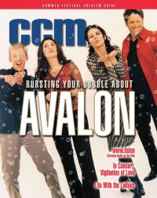

CMnexus
: Contemporary Christian culture, music, and media.
|
|
CCM, Apr 2001, vol. 23, iss. 10
| Cover |
|---|
|  | | Writers in this Issue |
|---|
Akins, Debra
Aldridge-McNeece, Sarah
Argyrakis, Andy
Baldwin, Rick
Black, Beau
Brown, Bruce A.
Carlozo, Lou
Fernandez, Michael
Fischer, John
Gillespie, Natalie Nichols
Harris, Laura
Hefner, April
Howe, Michele
Mackle, David
Nentwig, Wendy Lee
Riddle, Melissa
Urbanski, Dave
|
Cover Feature:
- "Behind The Music" by Debra Akins
Article:
- "A Family Affair" by Wendy Lee Nentwig
- "Strangers & Aliens" by Melissa Riddle
- "All In A Year's Work" by Natalie Nichols Gillespie
festival guide
On The Beat:Talent Pool:Story Behind the Song:
- "More Than You'll Ever Know" by Andy Argyrakis
What's New:In Concert:
- "First Presbyterian Church, Hollywood, CA" by Dave Urbanski
Outta Toon:Consider This:
- "Don't Look Back" by John Fischer
|
|